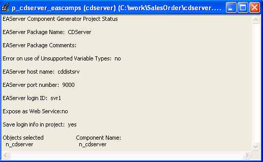

The Project painter workspace for executable applications is shown in "Defining an executable application project". It has text boxes and radio buttons you use to specify the characteristics of your executable file and dynamic libraries.
The workspace for all other types of project objects is different. It is a read-only display that shows options you specify for the project object. If you used a wizard to create the project, it shows the options you selected in the wizard. If you did not use a wizard, you use Edit menu items or PainterBar buttons to select the objects the project will use and to specify project properties.

When you build the project, the Output window shows whether the build was successful and lists any errors encountered. For most projects, this information also displays in the Project workspace.
You create new projects for components and proxies and open them in the Project painter the same way you do application projects. Use the following procedure to define and build projects for components and proxies.
 To define and build a project object for components
and proxies:
To define and build a project object for components
and proxies:
Create a new project and open the Project painter.
For more information, see "Creating a project".
Select Edit>Select Objects from the menu bar, select the objects you require, and click OK.
The appearance of the Select Objects dialog box depends on the project type. For some project types you can select multiple objects.
Select Edit>Properties from the menu bar, complete each Property page, and click OK.
As you set or modify properties, your choices are reflected in the workspace.
Select File>Save to save your choices.
Click the Build button in the PainterBar, or select Design>Build Project.
PowerBuilder builds the project. For some components, it also deploys the generated objects.
You can build and deploy a single project or all the projects in your workspace. You can also build and deploy from a command-line. For more information, see "Building workspaces".
Appendix A describes the extended attribute system tables. Appendix B describes how to use OrcaScript for automatic processing of builds and source control operations.